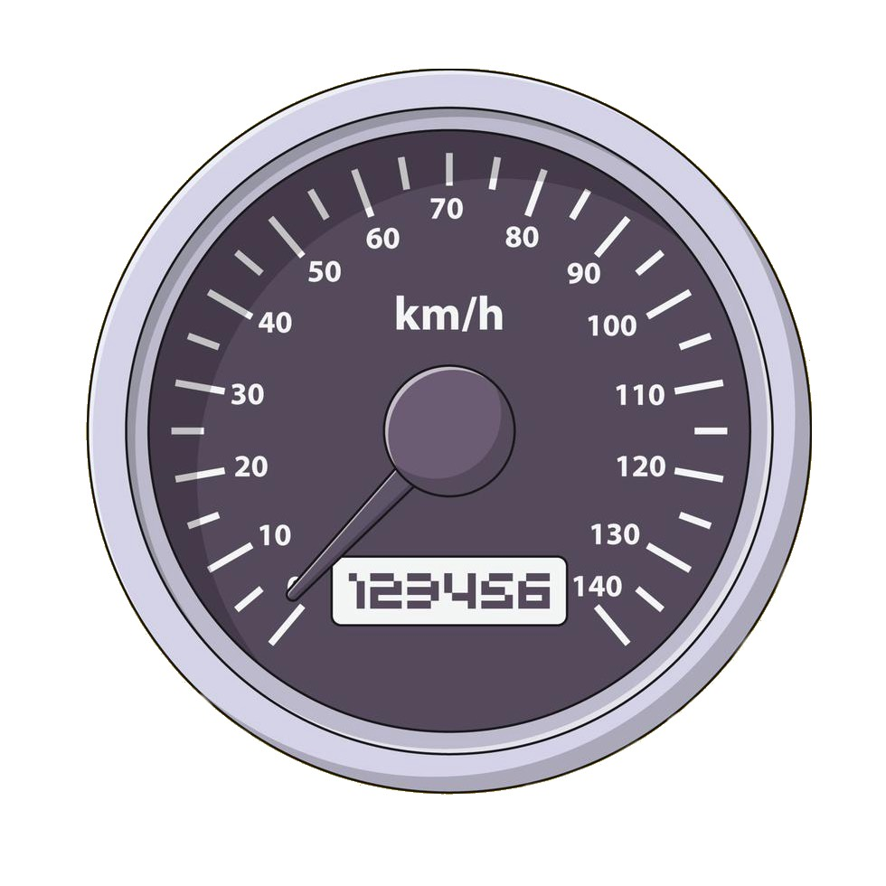

MRUV, ¿Qué es?
El movimiento rectilíneo uniformemente variado (MRUV) o también
llamado movimiento rectilíneo uniforme acelerado (MRUA), es movimiento
que se caracteriza por tener una trayectoria en línea recta y una
aceleración constante y diferente a cero, por lo tanto la velocidad en
este movimiento cambia uniformemente dependiendo de la dirección de su aceleración.
¿Cuáles son sus principales características?
- Su trayectoria es en línea recta, lo que significa que es un movimiento que
se mueve en una dimensión
- Su aceleración es diferente de cero, esto es lo que diferencia de un mru.
- Su velocidad varia constantemente a causa de la aceleración. La velocidad aumenta
o disminuye de forma permanente, por lo que en un ejercicio de movimiento rectilíneo
uniformemente variado siempre se va a trabajar con una velocidad inicial y una velocidad
final.
Magnitudes que intervienen:

- Velocidad inicial (v0): es la velocidad con la que comienza el movimiento. Se
mide en metros sobre segundos (m/s).
- Velocidad final (v): es la velocidad con la que finaliza. Se mide en metros
sobre segundos (m/s).
- Tiempo (t): es el tiempo que tarda en realizarse el cambio de velocidad.
Se mide en segundos (s).
- Aceleración (a): es la magnitud que mide el cambio de velocidad por unidad
de tiempo. Si es positiva significa que la velocidad va aumentando y si es
negativa, que la velocidad va disminuyendo (frenado). Se mide en metros sobre segundos cuadrados
(m/s2).
- Distancia (x): es la distancia total que recorre en el tiempo especificado,
es decir entre la v0 y la vf indicadas. Se mide en metros (m).
- Distancia inicial (x0): es la distancia del terreno en la que se encuentra, antes
de comenzar a calcular. Se mide en metros (m).
Formulas: